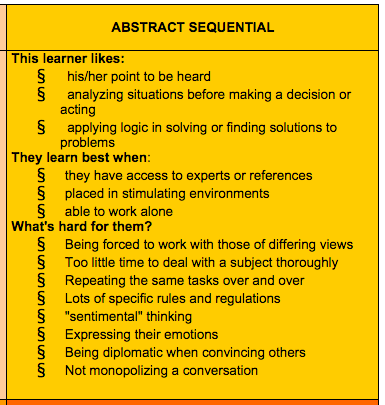

thinking big
Learning How to Learn Better at DBC
Thursday, April 2nd, 2015
back to blog index
It's strange how little we often know about something we do all the time. Learning is something that’s part of every day. We're constantly taking in information. Sometimes we've gotten that information before, but a lot of it is new. And when we’re choosing which information to absorb - to say, acquire a new skill - it takes a lot of work.
But strangely, we often don’t know our best method of taking in that information. When we were young, most of us were all taught to learn in the same way: listen in class, read this book, finish this homework. But if we evaluate ourselves carefully, we can see that we can find better ways of learning.
Anthony’s Gregorc’s ”Mind Styles” model seeks to provide an “organized way to consider how the mind works” when it comes to learning. I took the assessment, and I learned that I’m an “abstract sequential” thinker (those words don’t generally go hand-in-hand in my mind, but I’ll let it go). According to Mr. Gregorc, here’s what that says about me:
Source: “Mind Styles - Anthony Gregorc” (link above).
While that list isn’t 100% accurate, I have to admit, it’s pretty close. And I believe one word links many of those traits together: analysis. I like to analyze. I analyze people - especially myself - all day long. I analyze my decisions and my emotions more than anything. That often leads to making good decisions and being emotionally aware, I believe, but it can also be slow.
When it comes to learning in a class-like setting, especially remotely, that can lead to problems. If I trust the learning “road map” laid out for me, all is well. But if I run out of work, or I have to study independently, I spend a lot of time considering how to best learn independently. And I don’t think that’s without reason. There is a lot of information to absorb at DBC, especially for a complete beginner. I want to understand everything that goes into being a Rails developer. But while that motivation and curiosity is good, it also means that there are literally countless resources to sift through. Time spent making a plan and choosing good resources can be beneficial, but it could also be time spent doing the actual learning, even if that learning isn’t as efficient as possible.
Those are the thoughts that have bounced around in my head for the first three weeks. I’ve realized that the more I learn, the more I will realize I don’t yet know (or, will never know, because I don’t need to). For me, that’s disconcerting. I like understand things thoroughly. But, I’ve slowly found ways of dealing with that.
For starters, it helps to time-box. Telling myself I will spend a certain amount of time on something keeps me from becoming frustrated that I’m not exploring the other topics that I’m interested in. It also helps to keep lists. If I write down a topic that I don’t totally understand, it helps to know that I have a record of that to come back to (even if I never do). But more than anything, I've found it's imporatant to remind myself that it just isn’t possible to understand everything. There isn’t enough time when it comes to a subject like this. But, I take comfort in knowing that the information will force itself on me: if I need to know it, that much will be obvious. As I move through the program, keeping things like this in mind should help keep me on track.
. . .
It’s also important to always keep in mind the topic of growth vs. fixed mindset. It’s necessary to leave behind the idea that we often believed as kids: there are smart people and dumb people, and those somewhere in between, and that our place in those categories doesn't change. In reality, being “smart” comes down to effort, and struggles are simply learning opportunities.
In my first few months of exploring web development, there were definitely hurdles. I sometimes wondered if there might come a topic that I couldn’t learn. I try to tell myself that given enough time, I can learn anything. I believe that’s true, and so far it has been. And I hope I’m nearing the point where I’ve gained enough confidence to believe that whatever hurdles come my way in this field, I can get over them with effort. Again, I’m beginning to believe that. But my learning style can get in the way. I’m most comfortable when I can take all the time I need to learn something. In a fixed, very full schedule, that will be difficult. There will be times when I’ll have to tell myself “yes, I can learn this, but I can’t do it right now.” And that will be hard.
But holding onto the idea of a growth mindset will keep me on a good path. I know that I can get smarter and smarter, I can feel it every day. Trusting that I don’t always know the best way to do that, and that others can help me, will be important too. One of the reasons I chose DBC was that the people in charge have had years to improve how they deliver the material. They know how to put me in a growth mindset (and I believe they already have), and they know how to help me learn my best. But it also helps that they care about things like learning, empathy, culture, and other topics outside of the actual coding. Feeling like we are growing in more ways than one is a great feeling. I know I’ve already grown considerably, and I can’t wait for more.
back to blog index